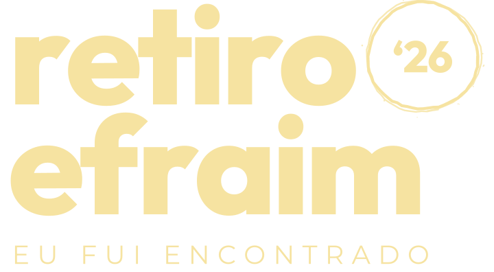
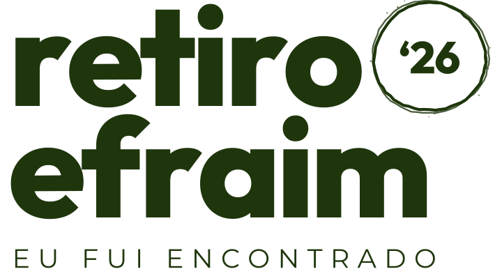
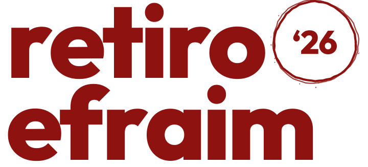
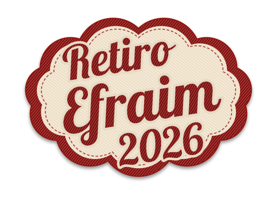
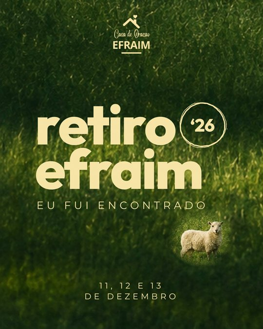
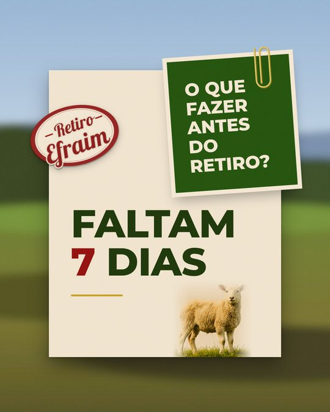
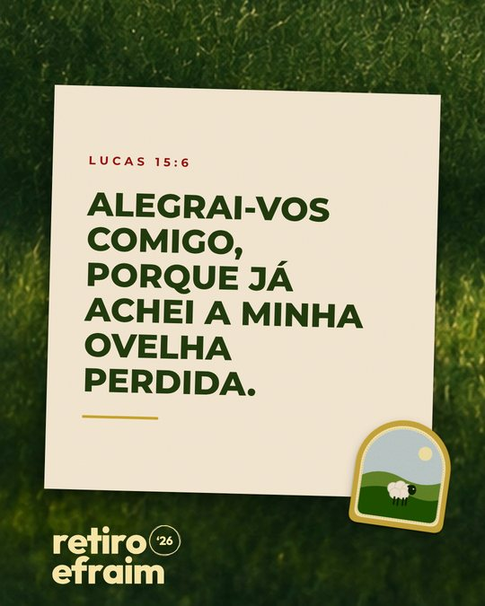
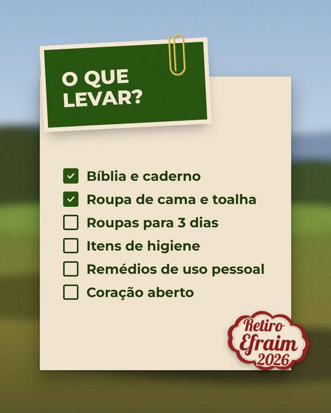
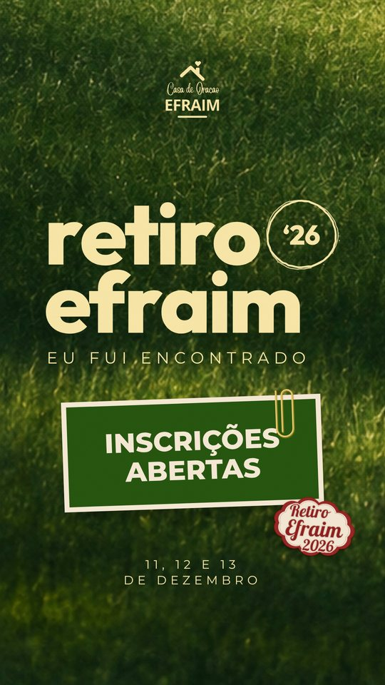

<title>Retiro Efraim '26</title>
<meta name="claude:viewport-fit-sides" content="cover">
<link rel="preconnect" href="https://fonts.googleapis.com">
<link rel="preconnect" href="https://fonts.gstatic.com" crossorigin>
<link rel="stylesheet" href="https://fonts.googleapis.com/css2?family=Outfit:wght@800&family=Montserrat:wght@400;500;700;800&family=Lobster&display=swap">
<style>
/* Layout: o manual é o próprio pasto. Fundo de grama escura, conteúdo em folhas de papel presas com clipe. Visual único (sem tema claro/escuro). */
:root {
  --pasto: #1F360C; --folha: #24500F; --capim: #7D9230; --manteiga: #F6E3A1;
  --papel: #F3E6D0; --bordado: #8E1210; --ouro: #C29B27; --ceu: #A3BFD9; --tinta: #16240A;
  --f-marca: "Outfit", "Arial Black", sans-serif;
  --f-titulo: "Montserrat", Arial, sans-serif;
  --f-patch: "Lobster", cursive;
  color-scheme: dark;
}
* { box-sizing: border-box }
body { background: #142407; color: var(--manteiga); font: 400 1.05rem/1.6 var(--f-titulo) }
.wrap { max-width: 1120px; margin: 0 auto; padding-left: max(16px, env(safe-area-inset-left, 0px)); padding-right: max(16px, env(safe-area-inset-right, 0px)) }
img { display: block; max-width: 100% }
h2 { font: 800 clamp(1.6rem, 4vw, 2.4rem)/1.05 var(--f-titulo); text-transform: uppercase; margin: 0; text-wrap: balance }
p { margin: 0; max-width: 62ch }
.eyebrow { font: 500 0.78rem/1 var(--f-titulo); letter-spacing: 0.32em; text-transform: uppercase; color: var(--ouro) }

.hero { background: #1F360C url("fundos/pasto-faixa.jpg") center / cover; position: relative }
.hero::after { content: ""; position: absolute; inset: 0; background: linear-gradient(180deg, rgba(20,36,7,.1), rgba(20,36,7,.75)) }
.hero .wrap { position: relative; z-index: 1; padding-block: clamp(48px, 9vw, 110px) clamp(40px, 7vw, 80px); display: grid; grid-template-columns: minmax(0, 1.2fr) minmax(0, 1fr); gap: 40px; align-items: end }
.hero .logo { width: min(560px, 100%) }
.hero aside { display: grid; gap: 18px; justify-items: start }
.hero aside p { font-size: 1.05rem; color: #E9DDB2 }
.hero .casa { width: 92px }
.dates { font: 400 1rem/1.4 var(--f-titulo); letter-spacing: .3em; text-transform: uppercase }

section { padding-block: clamp(52px, 8vw, 90px) }
.head { display: grid; gap: 12px; margin-bottom: 36px }
.head p { color: #D9D0A8 }

.sheet { background: var(--papel); color: var(--tinta); border-radius: 2px; box-shadow: 0 24px 50px rgba(0,0,0,.4); padding: clamp(24px, 5vw, 52px); position: relative }
.sheet h3 { font: 800 1.1rem/1.2 var(--f-titulo); text-transform: uppercase; color: var(--pasto); margin: 0 }
.clip { position: absolute; top: -34px; right: 40px; width: 40px }

/* Conceito */
.concept { display: grid; grid-template-columns: minmax(0, 1.3fr) minmax(0, 1fr); gap: 28px; align-items: start }
.concept blockquote { margin: 0; font: 800 clamp(1.4rem, 3vw, 2rem)/1.15 var(--f-titulo); text-transform: uppercase; color: var(--pasto) }
.concept cite { display: block; margin-top: 16px; font: 700 .78rem/1 var(--f-titulo); letter-spacing: .28em; color: var(--bordado); font-style: normal }
.pillars { display: grid; gap: 18px; margin: 0; padding: 0; list-style: none }
.pillars li { display: grid; gap: 4px; padding-left: 16px; border-left: 3px solid var(--ouro) }
.pillars b { font-weight: 800; text-transform: uppercase; font-size: .9rem; letter-spacing: .04em }

/* Logo */
.logos { display: grid; grid-template-columns: repeat(3, minmax(0, 1fr)); gap: 14px }
.logos figure { margin: 0; display: grid; gap: 12px; align-content: space-between; padding: 28px; min-height: 230px; border-radius: 2px }
.logos figcaption { font: 500 .72rem/1.4 var(--f-titulo); letter-spacing: .16em; text-transform: uppercase; opacity: .8 }
.on-pasto { background: #1F360C url("fundos/pasto-feed.jpg") center / cover; color: var(--manteiga) }
.on-papel { background: var(--papel); color: var(--tinta) }
.on-manteiga { background: var(--manteiga); color: var(--tinta) }
.notes { margin-top: 20px; display: grid; grid-template-columns: repeat(3, minmax(0, 1fr)); gap: 20px; color: #D9D0A8; font-size: .95rem }
.notes b { color: var(--manteiga) }

/* Cores */
.swatches { display: grid; grid-template-columns: repeat(4, minmax(0, 1fr)); gap: 14px }
.sw { border-radius: 2px; padding: 18px; min-height: 150px; display: grid; align-content: end; gap: 2px; background: var(--c); color: var(--t); box-shadow: inset 0 0 0 1px rgba(246,227,161,.15) }
.sw b { font: 800 1.05rem/1.2 var(--f-titulo); text-transform: uppercase }
.sw code { font: 500 .82rem/1.5 ui-monospace, Menlo, monospace }
.sw span { font-size: .85rem; opacity: .85 }

/* Tipografia */
.types { display: grid; grid-template-columns: repeat(3, minmax(0, 1fr)); gap: 18px }
.types .sheet { display: grid; gap: 14px; align-content: start }
.types .s1 { font: 800 clamp(2.6rem, 5vw, 3.6rem)/.9 var(--f-marca); color: var(--pasto); letter-spacing: -0.03em }
.types .s2 { font: 800 clamp(1.8rem, 3.6vw, 2.5rem)/1 var(--f-titulo); color: var(--pasto); text-transform: uppercase }
.types .s2 small { display: block; font-weight: 400; font-size: .9rem; letter-spacing: .3em; margin-top: 10px }
.types .s3 { font: 400 clamp(2.4rem, 4.6vw, 3.2rem)/1 var(--f-patch); color: var(--bordado) }
.types p { font-size: .92rem; color: #3D4630 }

/* Elementos */
.kit { display: grid; grid-template-columns: repeat(4, minmax(0, 1fr)); gap: 14px }
.kit figure { margin: 0; background: var(--papel); color: var(--tinta); border-radius: 2px; padding: 22px; display: grid; gap: 14px; align-content: space-between }
.kit .img { display: grid; place-items: center; min-height: 170px }
.kit .img img { max-height: 170px; width: auto }
.kit figcaption { font-size: .88rem; line-height: 1.4 }
.kit figcaption b { display: block; font-weight: 800; text-transform: uppercase; font-size: .82rem; letter-spacing: .06em; color: var(--pasto) }
.demo-nota { background: var(--folha); color: var(--papel); font: 800 1.3rem/1.05 var(--f-titulo); text-transform: uppercase; padding: 26px 22px 20px; box-shadow: 0 0 0 7px var(--papel), 0 10px 18px rgba(0,0,0,.3); transform: rotate(-3deg); position: relative; width: 170px }
.demo-nota img { position: absolute; top: -24px; right: 20px; width: 26px }

/* Artes */
.gallery { display: grid; grid-template-columns: repeat(4, minmax(0, 1fr)) minmax(0, .8fr); gap: 14px; align-items: start }
.gallery figure { margin: 0; display: grid; gap: 10px }
.gallery img { width: 100%; box-shadow: 0 14px 30px rgba(0,0,0,.4) }
.gallery figcaption { font-size: .82rem; color: #D9D0A8; line-height: 1.4 }
.gallery figcaption b { color: var(--manteiga); display: block }

/* Regras */
.rules { display: grid; grid-template-columns: repeat(2, minmax(0, 1fr)); gap: 18px }
.rules ul { margin: 14px 0 0; padding-left: 1.1em; display: grid; gap: 8px; font-size: .97rem }
.rules li::marker { color: var(--bordado) }
.files { margin-top: 18px; font: 400 .8rem/1.8 ui-monospace, Menlo, monospace; white-space: pre; overflow-x: auto; background: rgba(22,36,10,.06); padding: 14px 16px; border-radius: 2px }
.rules > div { min-width: 0 }

footer .wrap { padding-block: 40px; display: flex; flex-wrap: wrap; gap: 16px 28px; align-items: center; justify-content: space-between; color: #D9D0A8; font-size: .9rem; border-top: 1px solid rgba(246,227,161,.15) }
footer img { width: 150px }

@media (max-width: 900px) {
  .hero .wrap, .concept, .rules { grid-template-columns: minmax(0, 1fr) }
  .logos, .types, .notes { grid-template-columns: minmax(0, 1fr) }
  .swatches, .kit { grid-template-columns: repeat(2, minmax(0, 1fr)) }
  .gallery { grid-template-columns: repeat(2, minmax(0, 1fr)) }
}
@media (max-width: 480px) { .kit { grid-template-columns: minmax(0, 1fr) } }
</style>

<header class="hero">
  <div class="wrap">
    
    <aside>
      
      <p>Identidade visual do retiro da Casa de Oração Efraim. Tudo aqui nasce do cartaz oficial: o pasto, a ovelha encontrada, o papel e os patches bordados.</p>
      <span class="dates">11, 12 e 13 de dezembro</span>
    </aside>
  </div>
</header>

<main class="wrap">

  <section>
    <div class="head">
      <span class="eyebrow">Conceito</span>
      <h2>Eu fui encontrado</h2>
    </div>
    <div class="concept">
      <div class="sheet">
        
        <blockquote>“Alegrai-vos comigo, porque já achei a minha ovelha perdida.”<cite>Lucas 15:6</cite></blockquote>
      </div>
      <ul class="pillars">
        <li><b>O pasto</b>Grama ao sol com sombras longas de fim de tarde. É o lugar do encontro e o fundo de quase todas as peças.</li>
        <li><b>A ovelha</b>Sempre sozinha e pequena no quadro. Ela é quem foi achada, então nunca vira mascote nem rebanho.</li>
        <li><b>O papel e o bordado</b>Notas, clipes e patches de tecido trazem o lado de acampamento, feito à mão, de quem vai viver três dias juntos.</li>
      </ul>
    </div>
  </section>

  <section>
    <div class="head">
      <span class="eyebrow">Logotipo</span>
      <h2>retiro efraim ’26</h2>
      <p>Letreiro em minúsculas, compacto, com o ano dentro de um círculo traçado à mão. A frase “Eu fui encontrado” tem a mesma largura de “efraim”.</p>
    </div>
    <div class="logos">
      <figure class="on-pasto"><figcaption>Completo · creme sobre o pasto</figcaption></figure>
      <figure class="on-papel"><figcaption>Completo · verde sobre papel</figcaption></figure>
      <figure class="on-manteiga"><figcaption>Sem frase · vermelho bordado</figcaption></figure>
    </div>
    <div class="notes">
      <p><b>Completo:</b> cartaz, capa, story de abertura. Sempre que houver espaço.</p>
      <p><b>Sem frase:</b> assinatura no canto das artes, camiseta e crachá.</p>
      <p><b>Só o nome:</b> quando o ’26 atrapalha, como em bordado pequeno e carimbo.</p>
    </div>
  </section>

  <section>
    <div class="head">
      <span class="eyebrow">Cores</span>
      <h2>Tiradas do cartaz</h2>
      <p>O verde e o creme dominam. O vermelho aparece só no bordado e em um número ou palavra de destaque por arte.</p>
    </div>
    <div class="swatches">
      <div class="sw" style="--c:#1F360C;--t:#F6E3A1"><b>Pasto</b><code>#1F360C</code><span>Sombra na grama, textos verdes</span></div>
      <div class="sw" style="--c:#24500F;--t:#F3E6D0"><b>Folha</b><code>#24500F</code><span>Nota com clipe</span></div>
      <div class="sw" style="--c:#F6E3A1;--t:#16240A"><b>Manteiga</b><code>#F6E3A1</code><span>Letreiro sobre o pasto</span></div>
      <div class="sw" style="--c:#F3E6D0;--t:#16240A"><b>Papel</b><code>#F3E6D0</code><span>Folhas e fundo dos patches</span></div>
      <div class="sw" style="--c:#8E1210;--t:#F3E6D0"><b>Bordado</b><code>#8E1210</code><span>Patches e um destaque</span></div>
      <div class="sw" style="--c:#C29B27;--t:#16240A"><b>Ouro</b><code>#C29B27</code><span>Clipe e fio separador</span></div>
      <div class="sw" style="--c:#7D9230;--t:#16240A"><b>Capim</b><code>#7D9230</code><span>Grama ao sol, apoio</span></div>
      <div class="sw" style="--c:#A3BFD9;--t:#16240A"><b>Céu</b><code>#A3BFD9</code><span>Paisagem desfocada</span></div>
    </div>
  </section>

  <section>
    <div class="head">
      <span class="eyebrow">Tipografia</span>
      <h2>Três vozes, cada uma no seu lugar</h2>
    </div>
    <div class="types">
      <div class="sheet"><span class="s1">retiro<br>efraim</span><h3>Outfit ExtraBold</h3><p>Só no letreiro e em números grandes, em minúsculas, com espaço entre letras apertado.</p></div>
      <div class="sheet"><span class="s2">Faltam poucos dias<small>Eu fui encontrado</small></span><h3>Montserrat</h3><p>ExtraBold em caixa-alta para títulos e notas. Regular bem espaçada para frases curtas e datas.</p></div>
      <div class="sheet"><span class="s3">Retiro Efraim</span><h3>Lobster</h3><p>Só dentro dos patches bordados. Nunca em texto corrido nem em títulos.</p></div>
    </div>
  </section>

  <section>
    <div class="head">
      <span class="eyebrow">Elementos</span>
      <h2>Kit de montagem</h2>
      <p>As peças se combinam como uma colagem: papel sobre o fundo, nota verde presa com clipe, um patch colado na borda e, quando couber, a ovelha.</p>
    </div>
    <div class="kit">
      <figure><div class="img"></div><figcaption><b>Patch oval</b>Assinatura principal nas artes de papel.</figcaption></figure>
      <figure><div class="img"></div><figcaption><b>Patch nuvem 2026</b>Para stories e peças de data.</figcaption></figure>
      <figure><div class="img"></div><figcaption><b>Patch da ovelha</b>Versículos, devocionais e brindes.</figcaption></figure>
      <figure><div class="img"><div class="demo-nota">O que levar?</div></div><figcaption><b>Nota com clipe</b>Pergunta ou chamada curta, até 4 linhas.</figcaption></figure>
    </div>
  </section>

  <section>
    <div class="head">
      <span class="eyebrow">Artes</span>
      <h2>Primeiras peças</h2>
      <p>Prontas em PNG na pasta <code>artes/png</code>. Para mudar o texto, edite o HTML com o mesmo nome em <code>artes/</code>.</p>
    </div>
    <div class="gallery">
      <figure><figcaption><b>Cartaz</b>Feed 1080×1350</figcaption></figure>
      <figure><figcaption><b>Contagem</b>Troque o número a cada dia</figcaption></figure>
      <figure><figcaption><b>Versículo</b>Lucas 15:6</figcaption></figure>
      <figure><figcaption><b>O que levar</b>Lista com checagem</figcaption></figure>
      <figure><figcaption><b>Story</b>1080×1920</figcaption></figure>
    </div>
  </section>

  <section>
    <div class="sheet rules">
      
      <div>
        <h3>Faça</h3>
        <ul>
          <li>Um patch por arte, colado na borda do papel, levemente girado.</li>
          <li>Papel e nota sempre com sombra, como objetos reais.</li>
          <li>Ovelha pequena, no canto, olhando para quem vê.</li>
          <li>Vermelho só em um destaque por arte.</li>
        </ul>
        <div class="files">logo/       letreiro em SVG (creme, verde, vermelho)
elementos/  patches, clipe, ovelhas, logo da igreja
fundos/     pasto e paisagem (feed e story)
artes/      modelos em HTML + PNG prontos</div>
      </div>
      <div>
        <h3>Evite</h3>
        <ul>
          <li>Trocar a Outfit do letreiro por outra fonte.</li>
          <li>Letreiro em caixa-alta ou com contorno.</li>
          <li>Fundos lisos sem textura de grama ou papel.</li>
          <li>Mais de três elementos colados na mesma arte.</li>
          <li>Lobster fora dos patches.</li>
        </ul>
      </div>
    </div>
  </section>
</main>

<footer>
  <div class="wrap">
    
    <span>Casa de Oração Efraim · 11, 12 e 13 de dezembro</span>
  </div>
</footer>
